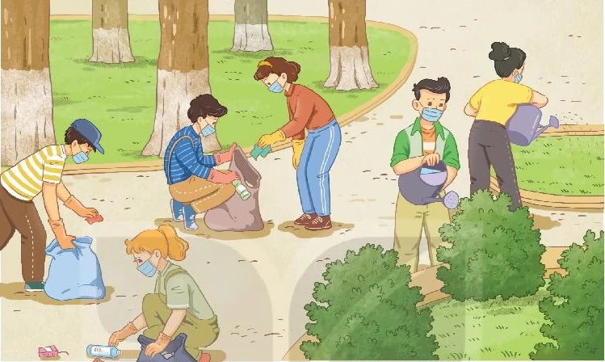

Go Green Weekend
Lesson 5 — Listening
Four stops in 45 minutes
- 🎯
Taboo
Describe it without saying it
6 min - 🔮
Before you listen
Four words + one picture
12 min - 🎧
While you listen
Tasks 2 and 3 · page 24
16 min - 🗺️
Plan an event
Groups of four
10 min
By the end of this lesson…
- 👂
Listening skills
Catch specific details in an announcement, and take notes while it plays.
- 📅
Vocabulary
Talk about schedules, donations and how a clean-up is organised.
- 🌏
Personal quality
Plan something for your own neighbourhood — not just talk about it.
- 🤖
Digital & AI
10.C2.3 build search queries · 10.A1.2 check the plan is safe and possible
Taboo
Two minutes per team
6 minutesDescribe it — but never say the word
Set 1
adopt · carbon footprint · litter · method · eco-friendly
Set 2
sort · awareness · organic · appliances · cut down on
One student describes, the team guesses. Two minutes per set. Ban the root word and any translation. If the describer says the word, that card is lost — move to the next one.
Before you listen
Words first, then predict
12 minutesFour words for the announcement · 1–2
- schedule (n) /ˈʃedjuːl/ thời gian biểu, lịch trình
- specific (adj) /spəˈsɪfɪk/ cụ thể, chi tiết
Four words for the announcement · 3–4
- donation (n) /dəʊˈneɪʃn/ đồ quyên góp, khoản ủng hộ
- delivery (n) /dɪˈlɪvəri/ sự giao hàng, phân phối
What are they doing? Why? · page 24

What can you see? Students cleaning up a park — picking up bottles, watering the bushes.
So what will the announcement be about? A Go Green Weekend event: where to meet, what to bring, what each group will do.
While you listen
Tasks 2 and 3 · page 24
16 minutesListen once. Decide. · 1–2
- The event lasts the whole weekend. TRUE
- Volunteers meet at the central market. FALSE They meet at the central park.
Listen once. Decide. · 3–4
- Volunteers should bring their own gloves. TRUE
- People can send in ideas for the next event. TRUE
One word in each gap · 1–3
1. Meeting point: the central ______. park
2. Group A collects ______ bottles. plastic
3. ______ the rubbish into the right bins. Sort
One word in each gap · 4–5
4. ______ your photos on the club page. Post
5. Send your ______ for the next event. suggestions
One word only
If you write two words, the answer is wrong even if the meaning is right.
Plan an event
Groups of four
10 minutesA green event for your neighbourhood
Where · when · who does what · what to bring
“Neighbourhood River Clean-up — Sunday morning, meeting at the bridge. Group A picks up plastic waste, Group B puts out sorting bins. Everyone brings gloves and a refillable bottle.”
How to work
- 🔎
10.C2.3
What do you still not know? Write the exact search you would type — “recycling drop-off point near…”, “safety rules for river clean-up”.
- 🧐
10.A1.2
Check what you find. Is the drop-off point still open? Is the river bank safe for students? An unchecked plan is not a plan.
Before you go
Today’s board
Words: schedule · specific · donation · delivery
Skill: first listening for true/false, second for the exact word
Homework
1. Workbook — Listening exercises.
2. Prepare for Lesson 6 — Writing.